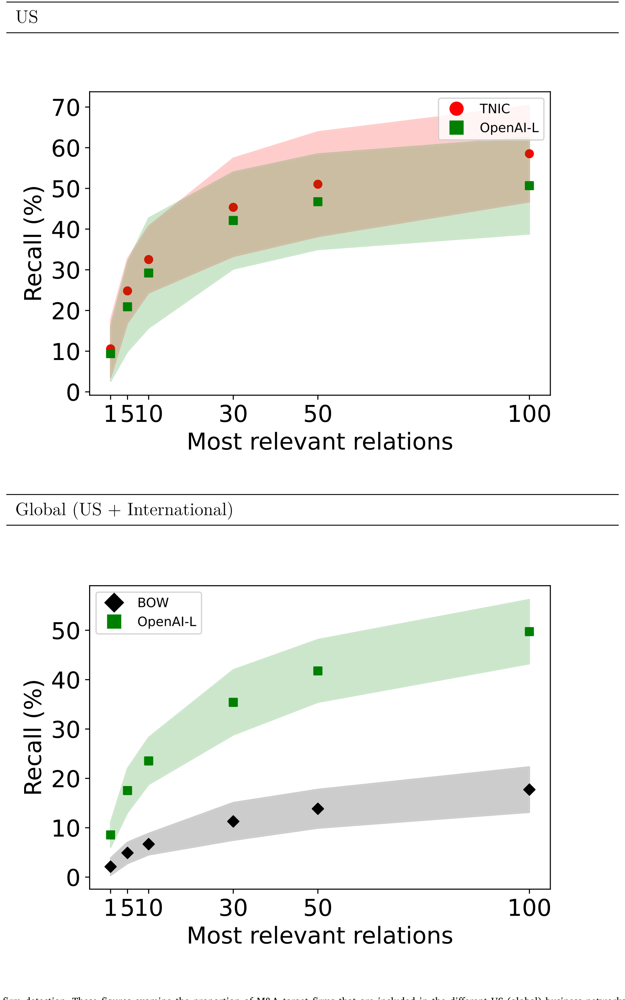
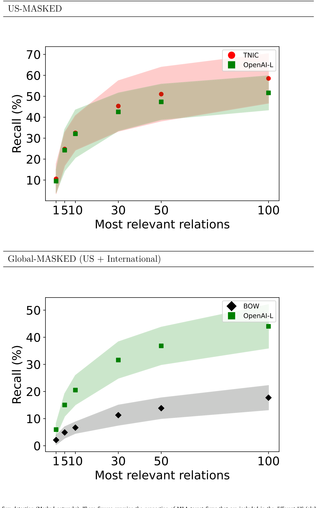
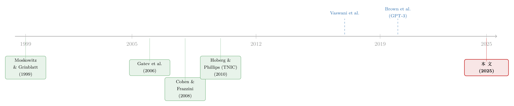

让大模型读遍全球年报：一张「谁与谁相关」的世界商业网
本文读的是 Breitung & Müller (2025, Journal of Financial Economics)：他们让 GPT-3 替全球 67 个国家、6.3 万多家上市公司各写一张标准化的「业务名片」，再用 OpenAI 的嵌入模型把名片变成向量、按余弦相似度连成一张时变的全球商业网络。这张网在「先行—滞后」选股和并购目标预测上都跑出了与 Hoberg-Phillips 的 TNIC 相当的成绩；而真正精妙的一步，是他们用「掩码」处理了大模型自带的前视偏差 (look-ahead bias)——并意外发现：这个偏差在选股里几乎不存在，在并购预测里却真真切切。
1 引言：两家车企，凭什么算「同行」
先想一个看似简单、其实很麻烦的问题：两家汽车制造商，一家只做电动车、卖给一线城市的高端用户，另一家做燃油车、主打县城的预算型买家。它们在 SIC 或 GICS 的分类表里被归进同一个「行业」，于是在几乎所有实证研究里，它们都被当成彼此的「同行 (peer)」。
可它们真的相关吗？它们的供应链、数字化程度、地理布局、客户画像，可能毫无交集。反过来，一家电池厂、一家充电桩运营商、一家二手车平台，按行业代码分属三个不同的格子，但它们之间的经济联系，可能比那两家「同行」紧密得多。
这正是过去十年公司金融与资产定价里一条贯穿始终的不满：传统的行业分类，装不下行业内部的异质性，也接不住跨行业的真实联系（Hoberg and Phillips, 2016）。Hoberg 和 Phillips 给出的著名解法是 TNIC（text-based network industry classification）——读每一家美国公司 10-K 报告里的 Item 1「业务描述」，按词频向量算两两相似度，给每家公司量身定制一张「邻居名单」。
但 TNIC 有一道天然的国界线：它依赖美国 SEC 的 10-K。全世界绝大多数公司既不交 10-K，也不会在年报里单列一个「业务」章节。 于是一个自然的问题浮上来：如果我们想画的不是「美国的」而是「全球的」商业网络，这条路根本走不通。这篇论文，就是想把这道国界线擦掉。
2 老路为什么都走不通
在动手之前，作者很克制地把所有「现成的办法」逐一否掉了——这一段其实是全文的动机所在，值得复述。
第一条路，按行业归类。 最省事，但前提是「同行业即经济相关」，这恰恰是被反复证伪的假设；它既会把行业内的异质公司错绑在一起，又会漏掉供应商、客户这些跨行业的联系。
第二条路，按历史收益率的相关性找「相似公司」。 Gatev 等人 (2006) 的配对交易 (pairs trading) 就是这个思路：风险暴露相近的公司，收益应当共动。可问题是，两家八竿子打不着的公司，也可能纯属偶然地一起涨跌，从而被误判为相关。
第三条路，从公司自己的披露里抽取竞争者、供应商、客户名单（如 Eisdorfer et al., 2021 从 10-K 的业务段里抽竞争对手）。问题在于披露是自愿、不规范的，国际年报更没有统一结构，抽出来的网必然残缺。
第四条路，直接买数据商的标准化公司描述。 听起来最理想，可作者跑遍各大供应商，没有一家能提供全球范围的、历史的业务描述。他们只能东拼西凑：从 SDC Platinum 里捞一部分（但只覆盖发生过并购、回购等事件的公司，有严重的选择偏差），再从德国资管 Acatis 那里拿到一份 2014 年 9 月的 S&P Global 历史描述补窟窿——仍然补不满。
四条路全是死胡同。于是，真正关键的一步出现了。
3 关键一步：让 GPT-3 替全世界的公司写「名片」
既然没有现成的标准化历史描述，那就自己生成。
作者的做法是：把每一家公司的原始年报喂给大语言模型 (large language model, LLM)，让它输出一段格式统一、口吻一致、像数据商出品的「业务描述」。具体地——
美国公司的年报从 EDGAR 抓，国际公司从伦交所集团 (LSEG) 的 Refinitiv 接口抓。先用 HTML 解析器从 10-K 里抽出 Item 1（抽不出来的约 10% 改下载 PDF），国际报告则因为结构不统一，直接用 Python 的 fitz 把正文整段抽出来。
这里有个现实约束很有意思：一份年报平均约 20,000 个 token。能一口吞下的是 GPT-4-turbo（上限 12.8 万 token），但处理几十万份报告，光输入成本就要冲到五位数美元。于是作者退而用更便宜的 GPT-3，代价是必须先「瘦身」：用句向量模型（英文用 all-mpnet-base-v2，非英文用其多语版本）把年报里的每句话和 LSEG 真实业务描述里的句子做语义比对，只留下与「业务相关句」余弦相似度足够高（阈值 0.5）的句子，直到 token 数压进 GPT-3 的窗口。
然后是那段后来被反复引用的 prompt——它要求模型「只用所提供的信息」，从一个旁观者视角，写出公司的业务模式、所处细分市场和产品，不超过 200 token，不要任何多余评论。这句「只用所提供的信息、不要用你已知的其他信息」，是后面对付前视偏差的第一道伏笔。
成果是一份覆盖惊人的数据集：2000 到 2021 年间，美国市场 91.6%–99.8% 的市值、国际市场 79.9%–98.3% 的市值，都有了一张标准化「名片」。
4 从名片到网络：嵌入与余弦相似度
有了名片，怎么连成网？
作者用 OpenAI 的两个嵌入模型 text-embedding-3-small（记作 OpenAI−S）和 text-embedding-3-large（OpenAI−L）把每段描述变成高维向量，再算两两之间的余弦相似度 (cosine similarity)：
$$\text{sim}(i,j) = \frac{\mathbf{v}_i \cdot \mathbf{v}_j}{\lVert \mathbf{v}_i \rVert \, \lVert \mathbf{v}_j \rVert}$$
这里 \(\mathbf{v}_i\)、\(\mathbf{v}_j\) 是两家公司业务描述的嵌入向量。和词袋 (bag-of-words, BOW) 不同——BOW 的每一维是某个词的出现频次，「security」无论指网络安全还是生产安全都算同一个词，近义词「cars」和「automobiles」却被当成两回事；而嵌入向量是把语义分布式地编码进所有维度，因此既能区分一词多义，也能识别近义。这正是「上下文感知 (context-aware)」网络相对「基于词」网络的根本优势。
接着，作者把全样本里余弦相似度超过 99 分位数的公司对，认定为「经济相关」。所有越过这条线的关系，构成了那一年的全球商业网络。因为名片是逐年生成的，网络也就随时间演变——这是「时变」的来源。
验证上他们做得很扎实：嵌入网络中，同行业、同国家的配对显著多于词袋网络（说明它确实抓住了相似性）；两个 OpenAI 模型之间，小模型 58% 的关系能在大模型里复现，两者竞争者组合的平均收益相关性高达 0.85（说明结果稳健）。在识别美国披露的竞争关系（来自年报、并购文件、FactSet Revere）这件事上，嵌入网络一律优于词袋网络，并与 TNIC 旗鼓相当。
但在所有这些之前，有一个隐患必须先拆掉。
5 那个绕不开的麻烦：前视偏差与「掩码」
这是全文的「核心」，也是我建议你读这篇论文时最该咬住不放的一点。
问题出在嵌入模型的「出身」。它背后的 GPT-3，训练数据一直延伸到 2021 年 9 月。也就是说，模型「知道未来」。
作者举了一个绝佳的例子：宝洁 (P&G) 在 2005 年收购了吉列 (Gillette)。如果模型的训练语料里包含了这桩并购，那么当它去嵌入两家公司收购之前（比如 2000 年）的历史业务描述时，很可能因为「它知道这俩后来成了一家」，而给出异常相似的向量——尽管在 2000 年，宝洁和吉列其实相当不同。同理，亚马逊从卖书到科技巨头的演化，也会让它 2000 年的描述与微软同期描述显得过分相似，凭空造出「不合时宜的关联 (anachronistic associations)」。
这就是前视偏差：你以为在用历史信息选股，其实悄悄掺进了未来。对任何号称能「预测」的回测，这都是致命的。
作者的解法，是给名片打码：在生成业务描述、以及做嵌入之前，用命名实体识别（Python 的 spaCy）把公司名、产品名这些「身份信息」遮蔽掉，逼模型只能依据业务内容本身判断相似，而无法调用它脑子里关于「这家公司是谁、后来怎样了」的记忆（思路上类似 Glasserman and Lin, 2023 与 Kim et al., 2024）。这样得到的，就是「掩码网络 (masked networks)」。
接下来，作者用两个应用，把这张网——以及掩码的效果——放到火上烤。
6 验证一：先行—滞后效应
第一个应用，是资产定价里被研究得最透的现象之一：先行—滞后效应 (lead–lag effect)——经济上相关的公司，其股价对共同信息的反应有先有后，于是「领先者」的收益能预测「滞后者」的收益。
文献早已沿着各种「相关」维度记录过它：同行业（Moskowitz and Grinblatt, 1999）、相近地理位置（Parsons et al., 2020）、供应链上下游（Cohen and Frazzini, 2008；Menzly and Ozbas, 2010）、相似公司特征（Müller, 2019）。（关于「经济联系」如何制造可预测的横截面收益，债券市场上也有同样的故事，可参见《评级一起动，股价却慢半拍——藏在债券市场里的「经济联系」》；而把「同行效应」按强弱邻居折叠开来的处理，可参见《强邻、弱邻，和你站的位置》。）
作者的策略很直接：对每张网络，买入那些「其经济相关公司上月表现最好」的股票，卖空「相关公司上月最差」的股票，然后看七因子 alpha（Fama 和 French (2015) 五因子，外加动量与短期反转）。能跑出最高 alpha 的网络，大概就最贴近真实的经济联系。
结果呢？
- 在美国，上下文感知网络比基于词的网络每月最多高出
27个基点（bps），且统计显著；其 alpha 介于每月119–146bps，与基于 TNIC 的策略（156bps/月）相当，\(t\) 值在 6 上下。 - 放到「美国 + 国际」的全球设定里，上下文感知网络的七因子 alpha 最高达每月
281bps，比可比的词袋策略最多高出73bps，差异高度显著。 - 即便用更保守的市值加权，月 alpha 在美国最高
40bps、全球74bps；用「封顶市值加权」以避免巨头主导（Jensen et al., 2023），美国与全球的 alpha 分别可达81bps 与165bps/月。
而最关键的观察是：换成掩码网络后，这些数字几乎没变。换句话说，在先行—滞后这个场景里，所谓的 LLM 前视偏差似乎并不重要。
这是个反直觉、却很合理的结论：选股靠的是「谁和谁业务相近」这种相对稳定的结构性信息，模型即使「记得未来」，也难以把这点记忆转化为对上个月谁涨谁跌的预知。
7 验证二：并购目标预测（以及反转）
第二个应用，是沿着 Hoberg 和 Phillips (2010) 的发现——并购的目标公司，往往与收购方处在相似的产品市场——去预测并购目标。
先看「命中率」：约 50% 的美国目标公司（被美国收购方收购），落在与收购方业务描述相似度最高的前 100 名之内，与 TNIC 的 58% 接近；国际市场上也有类似表现。如图 7 所示，不同网络捕获并购目标的比例可以直接拿来横向比较。

Figure 7: M&A target firm detection. These figures examine the proportion of M&A target firms that are included in the different US (global) business
再做一个 logistic 回归，控制行业、国家、盈利能力等变量后，两家公司业务描述的高相似度，会显著提高其发生并购的概率。
但反转就在这里。当作者把同样的回归换成掩码后的业务描述，预测力显著下降——虽然仍然统计显著。如图 8 所示，掩码网络对并购目标的识别能力明显被削弱。

Figure 8: M&A target firm detection (Masked networks). These figures examine the proportion of M&A target firms that are included in the different US
这一升一降之间，藏着全文最漂亮的一笔逻辑闭环：与选股不同，在并购预测里，前视偏差是真实存在的。这完全符合宝洁—吉列的直觉——模型确实「知道」谁后来收购了谁，于是未打码时它能「提前」把目标认出来；一旦打码，这部分「作弊分」就被扣掉了。
这正是这篇方法论文章最有价值的副产品：它不仅给了你一张网，还给了你一把尺子——通过对比掩码前后的表现，你能反过来诊断某个研究场景里前视偏差到底有多严重。在选股里可以忽略，在并购预测里必须当心。
8 再进一步：区分竞争者、供应商与客户
到此为止，这张网只告诉你「A 与 B 相关」，却分不清这是竞争关系，还是供应—客户的上下游关系。可对很多研究问题（比如全球供应链的韧性、Covid-19 这类外生冲击下的传导）来说，这个区别至关重要。
作者的最后一招，是微调 (fine-tuning) 一个开源语言模型：用 FactSet Revere 里真实记录的业务关系作标签，训练模型去判别两家公司之间是竞争者、供应商还是客户。在 AI 生成的描述上，这个三分类模型达到了 85.73% 的准确率。
这一步把网络从「无向的相关图」升级成了「有类型的有向图」，也补上了 Frésard et al. (2020) 那类「纵向联系网络」在全球尺度上的空白。
9 文献脉络
把这篇论文放回它所处的坐标系，能看得更清楚。
这条线最早的母题，是「经济联系如何制造可预测的收益」：从 Moskowitz 和 Grinblatt (1999) 的行业动量，到 Cohen 和 Frazzini (2008)、Menzly 和 Ozbas (2010) 的供应链先行—滞后，再到 Müller (2019) 用公司特征定义的经济联系。综述见 Ali 和 Hirshleifer (2020)。与此并行的，是「如何度量公司间相关」的方法演进：从 Gatev 等人 (2006) 的收益相关性配对，到 Hoberg 和 Phillips (2010, 2016) 用 10-K 文本构建的 TNIC——后者是本文最直接的对标对象。

另一条暗线，是 NLP 技术本身的爆发：Vaswani 等人 (2017) 的 Transformer 架构，到 Devlin 等人 (2019) 的 BERT，再到 Brown 等人 (2020) 的 GPT-3——正是 GPT-3 的文本生成与嵌入能力，让「为全球公司批量生成标准化名片」第一次在工程上可行。
于是本文的位置就很清楚了：它站在「文本度量公司关系」（TNIC 一脉）与「生成式 AI」（GPT 一脉）的交叉口，第一次把网络从美国推向全球，并顺手解决了用近期 LLM 做历史研究时绕不开的前视偏差。值得一提的是，Hoberg 和 Phillips (2025) 本人也转向了嵌入方法，报告其行业分类的信息量提升约 20%——两条路在这里交汇了。
评论与延伸（Q&A + 研究方向）
(a) 几个可能的疑问
Q：这和 Hoberg-Phillips 的 TNIC 到底有什么本质区别？
三点。其一，覆盖范围：TNIC 受限于美国 10-K，本文覆盖 67 国、6.3 万多家公司。其二，底层度量：TNIC 是词袋 + 词频向量，本文是 LLM 生成描述 + 嵌入向量，后者能处理一词多义和近义词。其三，作者很诚实地承认：若你只关心美国市场，TNIC 用整段 Item 1、覆盖率更高、样本期更长，仍然更优——本文的价值在「全球」二字。
Q：用一个知识截止到 2021 年 9 月的模型去研究 2000 年的数据，结论还可信吗？
这正是本文最当心的地方。他们用「掩码」把公司/产品身份信息遮蔽，并用「掩码前后对比」来量化偏差大小。结论是分场景的：先行—滞后选股几乎不受影响（掩码前后 alpha 几乎不变），并购预测则明显受影响（掩码后预测力显著下降）。所以作者建议：做严肃研究就用掩码网络。
Q：99 分位数这条线是不是太武断了？
是一个需要权衡的设定。线划得越高，网络越稀疏、越「干净」，但会漏掉弱联系；划得越低则相反。本文用 99 分位，并通过同时使用 small 与 large 两个嵌入模型、以及与 TNIC、词袋的多重对照来证明结果对模型选择稳健，但阈值本身的敏感性仍是使用者需要自己掂量的。
Q：alpha 那么高（全球封顶市值加权能到 165 bps/月），是真信号还是回测幻觉？
几点支撑它更像真信号：\(t\) 值在 6 左右、控制了七因子、市值加权与封顶加权下依然存在、且掩码后基本不变（排除了前视偏差这个最大嫌疑）。但要提醒：这些是纸面 alpha，未计交易成本，全球小盘股的实际可交易性、做空成本会吃掉相当一部分。
Q：为什么中国、部分亚非市场覆盖偏低？
一个很「工程」的原因：GPT-3 的分词器 (tokenizer) 处理中文等语言效率低，导致这些市场的描述生成困难、覆盖下降。这是个值得记住的提醒——LLM 方法的「全球性」会被底层模型的语言能力悄悄打折扣。
Q：嵌入向量是个黑箱，研究者怎么知道它抓到的是「业务相似」而不是别的？
作者用多维度验证来「祛魅」：同行业/同国家配对占比、与 FactSet Revere 真实关系的吻合度、竞争者组合 0.85 的收益相关性、并购命中率等。本质上是「以可观测的真实关系为锚」反向校准黑箱。（关于把金融里的机器学习黑箱拆成可解释的玻璃箱，另一个思路可参见《把机器学习的黑箱拆成玻璃箱：公司债收益率能被「看懂」地预测吗？》。）
(b) 几个可能的研究问题与提案
- 全球商业网络 × 公司债流动性传导
- 【经济故事】信用风险在「业务相关」的发行人之间会不会传染？一家公司的负面冲击，是否会通过竞争/供应链联系，推高其网络邻居的债券利差、压低其流动性？这把股权先行—滞后的逻辑搬到信用市场。
-
【可行性】中。需要把本文（公开）的全球网络与 TRACE（美国）或国际公司债成交数据匹配；识别上可用网络邻居遭遇的外生冲击（如自然灾害、监管处罚）作工具。难点是国际公司债数据的可得性与质量。
-
外资持有人是否「看懂」了商业网络？
- 【经济故事】跨境机构投资者在配置时，是更多沿「国家/行业」配置，还是真的沿「业务联系」配置？若外资持有结构与商业网络结构一致，则可检验外资是否把经济联系的信息定价进了价格。
-
【可行性】中高。本文网络是全球的、时变的，正好匹配 FactSet/Refinitiv 的跨境持仓数据；可用持仓的网络中心性预测收益共动。识别需处理持仓的内生性。
-
掩码法作为「前视偏差检测器」的标准化工具
- 【经济故事】本文意外发现「掩码前后之差」能量化前视偏差。能否把它做成一个通用诊断：给定任一基于 LLM 嵌入的预测任务，报告其「掩码折价」，作为该结论可信度的标尺？
-
【可行性】高。无需新数据，纯方法论；可在多个经典预测任务（盈余漂移、并购、违约）上系统跑一遍掩码对比，产出一张「哪些场景前视偏差严重」的地图。
-
供应链韧性与外生冲击（Covid-19）
- 【经济故事】有了能区分竞争者/供应商/客户的有向网络，可以直接检验：疫情冲击下，供应链上游中断如何沿网络向下游传导，哪些网络拓扑结构（集中 vs 分散）更具韧性。
-
【可行性】中。微调分类器已给出关系类型，冲击的外生性较好；难点是分类器 85.73% 的准确率会给上下游标注引入噪声，需要稳健性处理。
-
全球并购的「目标雷达」与跨境并购溢价
- 【经济故事】既然相似度能预测并购目标，那么「被网络标记为高概率目标、但尚未被收购」的公司，是否享有并购预期溢价？跨境并购里这种溢价是否更大？
- 【可行性】中。需用掩码网络避免前视偏差，结合 SDC/Refinitiv 并购数据。诚实地说，并购是稀有事件，预测—收益的检验需要足够长的样本和小心的多重检验校正。（关于并购作为技术「搬运工」的视角，可参见《并购不只是换老板：它是技术「搬运工」，也是不平等的「放大器」》。）
我的判断
贡献上，这篇文章的分量不在某个惊艳的 alpha，而在它交付了一件公共品：第一张覆盖全球、时变、且能区分关系类型的商业网络（且已公开）。它把 TNIC 这套「文本度量公司关系」的范式，从美国一国扩展到了全世界，方法上还示范了「用生成式 AI 把异构、多语言的原始年报蒸馏成同构信息」这条可复制的流水线。对做全球公司金融、产业组织、信息溢出的人，这是实打实的基础设施。
对识别的担忧有三。其一，前视偏差并未被根除，只是被压低——作者自己也说掩码后并购预测力仍显著，残余的污染有多大、会不会因任务而异，仍需逐案体检。其二，整条链路嵌套了多个会犯错的模型：句子筛选、GPT-3 生成、命名实体识别打码、嵌入、微调分类器，每一环的误差都会向下游累积，而 85.73% 的关系分类准确率意味着约七分之一的边类型是错的。其三，覆盖偏差（小盘股、亚非市场、中文）会让基于这张网的全球结论隐含一个「英语大盘股」的视角。
后续想看到的，首先是把掩码网络系统性地用到信用市场和外资持有人这两个方向（见上文提案 1、2）——这正是我自己最关心的地带；其次，是有人认真地把「掩码折价」做成一个标准诊断量，让所有用 LLM 做历史预测的论文都报告它。如果这两件事能落地，这篇文章的影响会远超它的两个示范应用本身。
参考文献
- Ali, U., Hirshleifer, D. (2020). Shared analyst coverage: Unifying momentum spillover effects. Journal of Financial Economics 136(3), 649–675.
- Brown, T., Mann, B., Ryder, N., et al. (2020). Language models are few-shot learners. Advances in Neural Information Processing Systems 33, 1877–1901.
- Cohen, L., Frazzini, A. (2008). Economic links and predictable returns. Journal of Finance 63(4), 1977–2011.
- Cohen, L., Lou, D. (2012). Complicated firms. Journal of Financial Economics 104(2), 383–400.
- Devlin, J., Chang, M.-W., Lee, K., Toutanova, K. (2019). BERT: Pre-training of deep bidirectional transformers for language understanding. Proceedings of NAACL-HLT 2019, 4171–4186.
- Eisdorfer, A., Froot, K., Ozik, G., Sadka, R. (2021). Competition links and stock returns. Review of Financial Studies 35(9), 4300–4340.
- Fama, E.F., French, K.R. (2015). A five-factor asset pricing model. Journal of Financial Economics 116(1), 1–22.
- Finke, C., Weigert, F. (2017). Does foreign information predict the returns of multinational firms worldwide? Review of Finance 21(6), 2199–2248.
- Frésard, L., Hoberg, G., Phillips, G.M. (2020). Innovation activities and integration through vertical acquisitions. Review of Financial Studies 33(7), 2937–2976.
- Menzly, L., Ozbas, O. (2010). Market segmentation and cross-predictability of returns. Journal of Finance 65(4), 1555–1580.
- Moskowitz, T.J., Grinblatt, M. (1999). Do industries explain momentum? Journal of Finance 54(4), 1249–1290.
- Müller, S. (2019). Economic links and cross-predictability of stock returns: Evidence from characteristic-based 'Styles'. Review of Finance 23(2), 363–395.
- Parsons, C.A., Sabbatucci, R., Titman, S. (2020). Geographic lead-lag effects. Review of Financial Studies 33(10), 4721–4770.
- Vaswani, A., Shazeer, N., Parmar, N., et al. (2017). Attention is all you need. Advances in Neural Information Processing Systems 30.